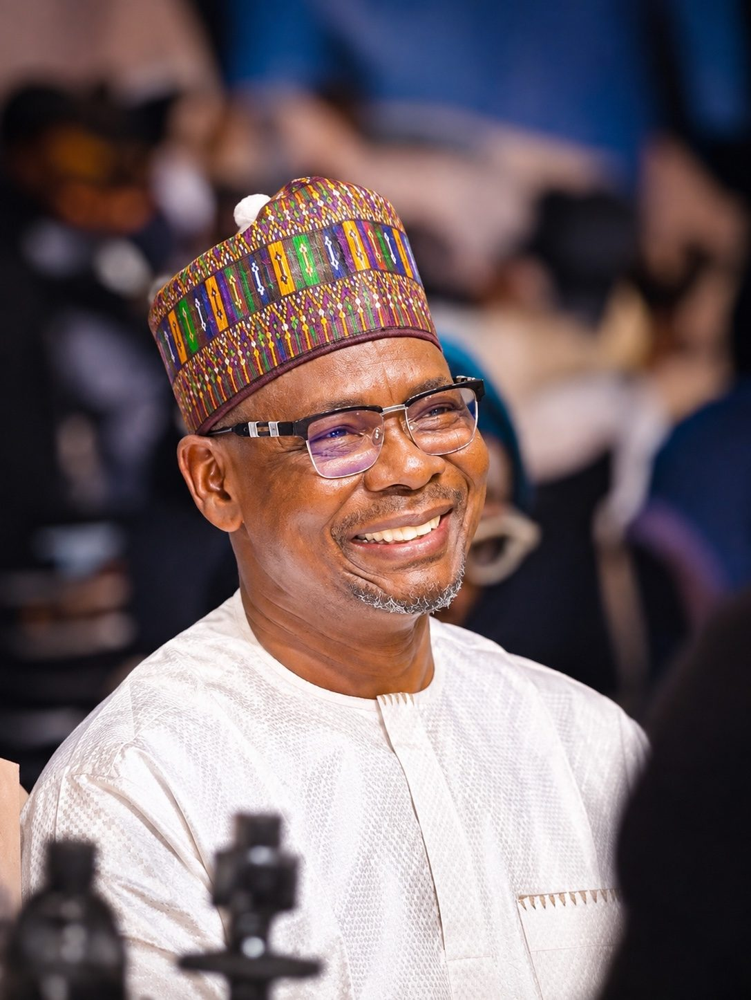
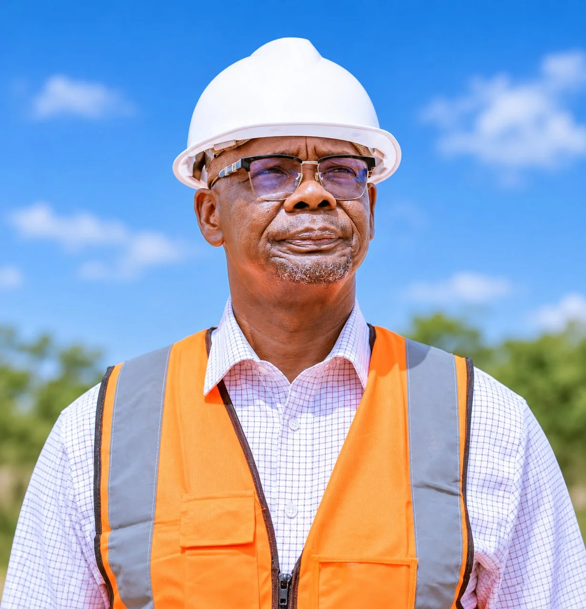

FOUNDATIONAL EDUCATION
Roman Catholic Mission Primary School
Attended primary school in Gudi, the community where he was born.
APC SENATORIAL CANDIDATE · NASARAWA NORTH 2027
Engineer, business executive and public servant whose career has spanned private enterprise and the governance of Nasarawa State.

Engr. Abdullahi A. Sule was born on 26 December 1959 in Gudi Station, in present-day Nasarawa State.
He attended Roman Catholic Mission Primary School in Gudi and later studied at Zang Secondary Commercial School in Plateau State. He went on to Indiana State University in Terre Haute, Indiana, where he earned a Bachelor of Science in Mechanical Technology and a Master of Science in Industrial Technology.
His professional career included engineering and management roles in Nigeria and the United States. After returning to Nigeria in 2000, he took on leadership responsibilities in the oil and gas sector and later became Managing Director and Chief Executive Officer of Dangote Sugar Refinery, subsequently serving as Group Managing Director.
In May 2019, he was sworn in as Governor of Nasarawa State. He was re-elected in 2023 and began a second term that year.
Education and training milestones recorded in the published biography. The dates below are included only where the available profile provides them.
FOUNDATIONAL EDUCATION
Attended primary school in Gudi, the community where he was born.
SECONDARY EDUCATION
Continued his education at Zang Secondary Commercial School in Plateau State.
UNIVERSITY · UNITED STATES
Earned a Bachelor of Science in Mechanical Technology and a Master of Science in Industrial Technology in Terre Haute, Indiana.
TERRE HAUTE, INDIANA, USAEducation details: official biography and Nigerian Society of Chemical Engineers profile.
Explore the transition from corporate leadership to elected public office. Open each milestone for a short account and its context.
4 milestones
Engineering, energy and industrial management
After returning to Nigeria in 2000, he took on leadership responsibilities in the oil and gas sector, including helping establish Sadiq Petroleum Nigeria Limited and later leading African Petroleum Plc.
CAREER HISTORY · BIOGRAPHICAL PROFILEAppointed Managing Director and Chief Executive Officer in 2007, he later served as Group Managing Director, with the profile recording his confirmation in that role in 2018.
CORPORATE LEADERSHIP · BIOGRAPHICAL PROFILELeadership through elected state office
Sworn in as Executive Governor of Nasarawa State on 29 May 2019.
PUBLIC OFFICE · OFFICIAL BIOGRAPHYReturned to office following the 2023 governorship election and began a second term.
PUBLIC OFFICE · OFFICIAL BIOGRAPHYCareer and public-service chronology is based on the official biography and the Nigerian Society of Chemical Engineers profile.
A small selection of the photographs already supplied with this website. Captions describe the visible setting rather than implying an event or achievement.

The gallery uses locally supplied profile photographs. Add dated, captioned event photographs only when their date, location and context can be confirmed.
Published records are grouped by project status and responsible institution. Federal commissioning, state-government programmes, agency activity and private investment are not presented as interchangeable forms of credit.
Source-linked records of federal commissioning, state-agency reporting, tracked private investment and budget allocations. These records document activity; they do not imply that the Governor personally initiated or delivered every item.
The first major lithium processing plant in Nasarawa was commissioned in May 2024. Federal reporting described a US$100 million investment with a stated processing capacity of 4,000 metric tonnes per day.
Source: Federal Ministry of Information ↗A second major lithium processing facility was commissioned in July 2026. Federal reporting put the investment at US$250 million and its stated capacity at 6,000 metric tonnes per day. This is a separate facility from the 2024 Avatar plant.
Source: Federal Ministry of Information ↗The Nasarawa Investment and Development Agency (NASIDA) has been positioned as a central vehicle for investment promotion, public-private partnerships and the coordination of state investment opportunities. Its 2021–2024 report records the Nasarawa Economic Development Strategy, the state’s first investment summit and investment pledges exceeding US$700 million, at different stages of realisation.
Source: NASIDA 2021–2024 report ↗NASIDA’s 2024 investment report lists actualised investments across mining, manufacturing, energy, technology, housing and retail. Its top-ten table reports a combined value of approximately US$465.775 million and 3,740 jobs. These are agency-reported figures.
Source: NASIDA 2024 investment report ↗The 2025 budget presentation allocated ₦78.16 billion to Education, Science and ICT, reflecting the sector’s prominence in the administration’s stated budget priorities.
Source: Federal Ministry of Information ↗Announcements, state programmes and projects whose cited sources describe them as proposed, under development, at groundbreaking stage or reported by government. Their status should not be read as proof of completion.
In January 2025, Governor Sule described a Chinese-backed cassava starch factory along the Akwanga–Gudi corridor. Site clearing had reportedly begun and equipment was being prepared for shipment. The cited report describes a project in development, not a completed factory.
Source: Nasarawa Eye ↗NASIDA’s PPP portal lists the Gudi Industrial Park as a proposed multi-component hub covering agro-processing, logistics, mineral processing and light manufacturing. The portal lists it at the preparation stage; it should therefore be understood as a development pipeline project, not a completed industrial park.
Source: NASIDA PPP portal ↗A separate ₦30 billion cassava industrial hub at Agwada in Kokona LGA was announced with a February 2026 groundbreaking. The proposed value chain includes cassava cultivation, starch, ethanol, high-quality cassava flour, animal feed and bioenergy. This is distinct from the Gudi cassava starch project.
Source: Federal Ministry of Information ↗Government and public reports describe road construction, urban renewal and flyover/underpass projects as part of the administration’s infrastructure programme. Published kilometre totals should be read as reported figures, not an independent audit.
Source: Voice of Nigeria ↗Federal reporting has highlighted hospital remodelling, selected primary healthcare upgrades and recruitment of nurses and midwives during the administration’s tenure.
Source: Federal Ministry of Information ↗This is an independent supporter-produced profile, not an official government audit. “Documented public record” means a claim is traceable to the linked publication; it does not mean independently audited. Federal agencies, state institutions, NASIDA and private investors are credited according to the cited material. Proposed, announced, under-construction and commissioned projects are kept distinct. Figures and project status may change as new reports are published.
Create a personalised poster to share with friends and your community.
Create a support poster →